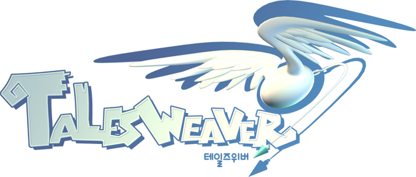

테일즈위버
세컨드런 일본 기사 번역
'날개 달린 그거'
NPC가 파는 음식, 음료 정리
'날개 달린 그거'

테일즈위버 '날개 달린 그거'에 관한 고찰.
테일즈위버 세계관엔 그렇게 막강한 영향력을 지닌건 아니지만 신앙이 있음.
'신조 비아누' 신앙. 과거엔 영향력이 큰 신앙이었으나, 현재는 쇠퇴했다고 함.
어쨌든 클라드에는 이 신조를 기리는 비아누의 신전이 있음.